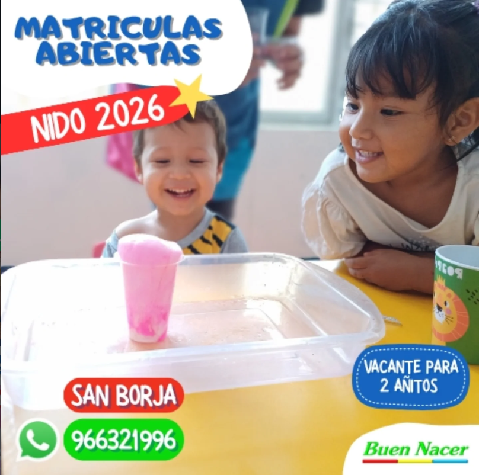

01 / LOS PRIMEROS DESCUBRIMIENTOS
Estimulación
Desde los 15 días de nacido
Estimulación
temprana
Desde los 15 días de nacido
Estimulamos a tu bebé y te enseñamos los ejercicios para continuar en casa. En cada sesión, participa acompañado por un adulto.
Frecuencia: 1 o 2 veces por semana.
¿Qué trabajamos?
- Movimiento y psicomotricidad.
- Estimulación sensorial y musical.
- Estimulación intelectual y artística.
- Socialización.